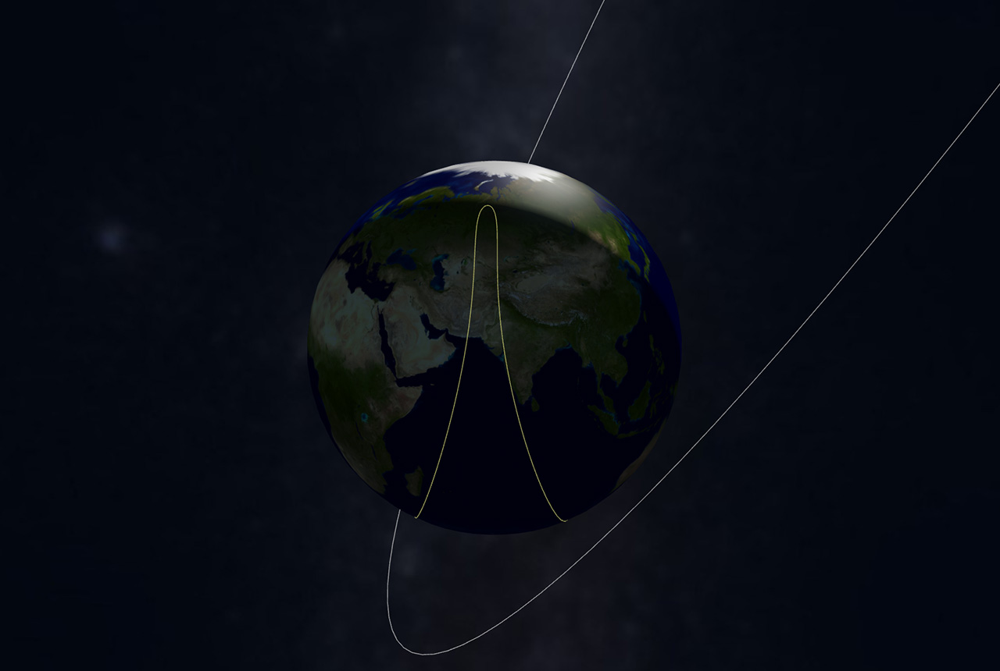
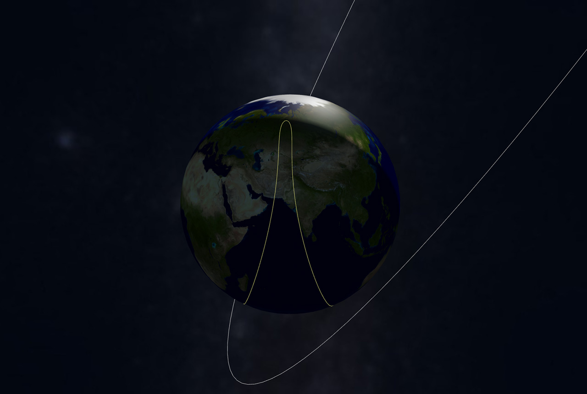

Overview
Satellite data comes in the form of a Two-Line Element (TLE) set (Figure 1), a format that describe a satellite's orbital elements. TLE can be used to find a satellite's position in space, but it is highly non-human-readable. Additionally, this data (provided by, e.g., SSCWeb and Space-Track.org) is provided in large numbers (approximately 17.000 satellites).
For that reason, current satellite visualization applications struggle to provide effective exploration tools. Real-Time Interactive Satellite Tracker (RTIST) is a tool for the exploration of earth's satellites. Using techniques such as brushing, dynamic queries and details on demand, this application enables users to visualize only the satellites they are interested in. Sounds bad. Elaborate
Features
The features of RTIST are all implemented with visualization principles in mind, aiming to accelerate and facilitate the user's insight gaining process. In the following sections, these features are presented.
Real time tracking
In order to deliver a reasonably accurate visualization of satellites and, at the same time, smooth the user's interactions (crucial for exploration applications), RTIST periodically calculates every satellite's position and velocity using the TLE data. As this task uses expensive calculations, this is done "only" twice a second. For the time between, the satellite's velocity is used to estimate its position every frame.
Ground track visualization
The ground track of the satellite is the projected (future) position of the satellite onto the surface of the earth. For this, the rotational speed using the sidereal time has to be taken into account, as the earth rotated below the satellite. In general two geocentric coordinate systems ECF and ECI are used. ECF does not include the rotation of earth, it is therefore fixed relative to other objects in the solar system. The ECI coordinate system on the other hand is fixed to the location on the ground and therefore rotates together with earths rotation.
 

Brushing
The implemented brushing tool enables the user to select a point the earth's surface, from which the satellites in a given radius are selected. This selection is visualized in the form of a cone, as shown in Figure 2. With this tool, users can brush over a region on earth (countries, continents) and find all satellites currently over the defined area.
Search
Blablabla
Color
Details on demand
Blablabla